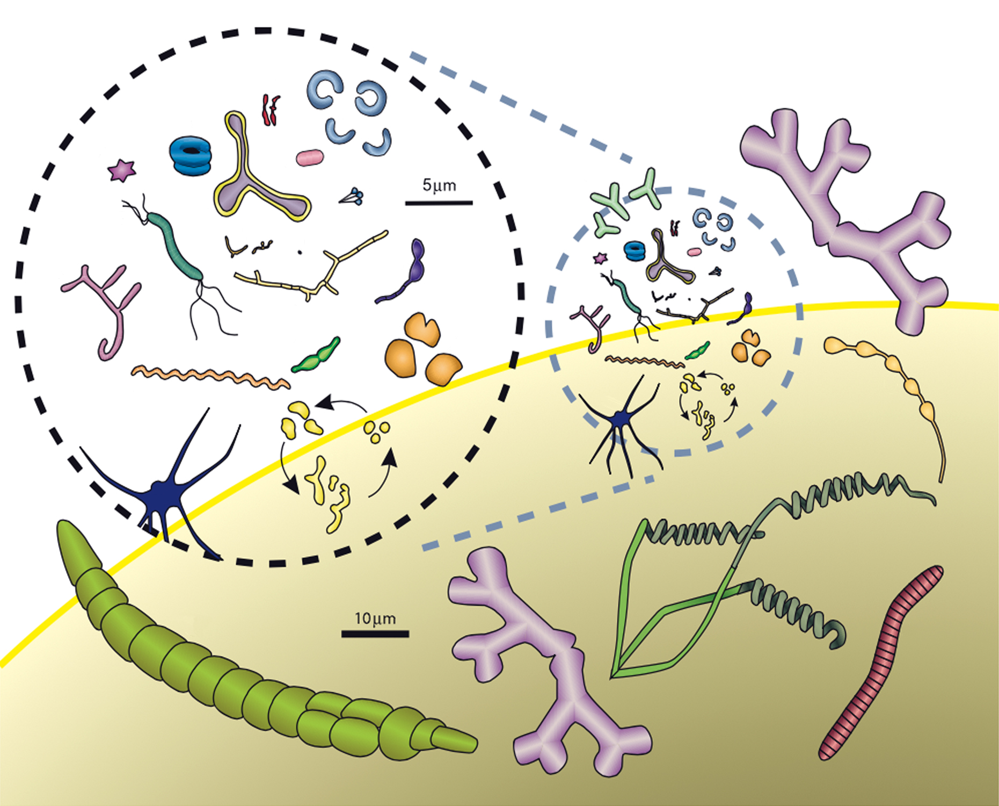
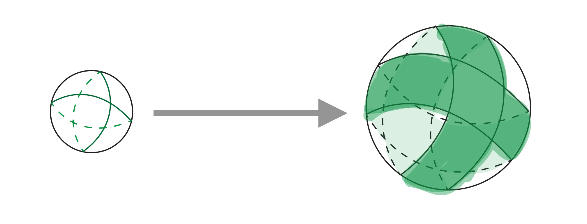
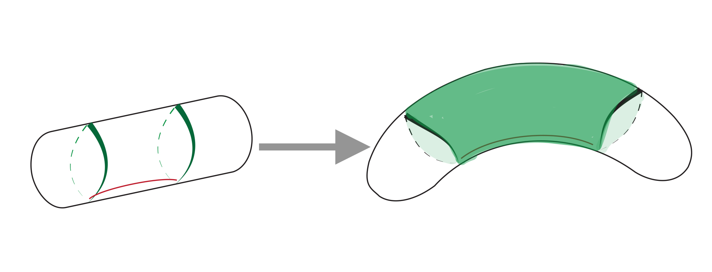
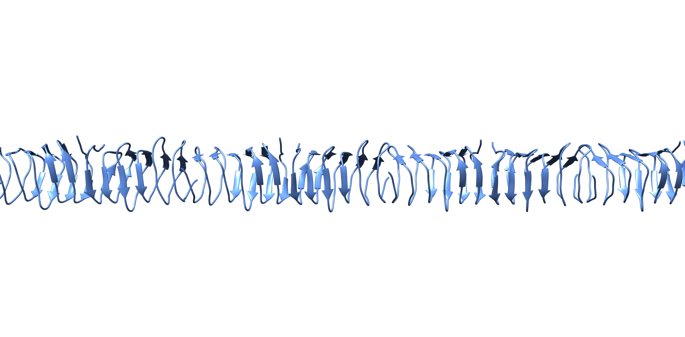
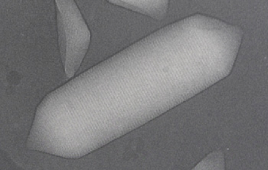

Chapter 3 Shape
3.1 Simkania negevensis
What kind of life do you envision for your cell? Just as the design of buildings reflects their purpose, different cell shapes suit different lifestyles. Does your cell need to soak up sunlight for photosynthesis? Burrow through tissue? Chase down prey? Each driving function is best served by a particular form Schematic – Cell shape diversity.
How can you give your cell a particular form? The final shape of a building is determined by a façade erected around a system of internal beams and joists–its skeleton. Cells determine their shape using a similar system–the cyto-(“cell”) skeleton–in concert with the rigid exoskeleton of the sacculus. The cytoskeleton of bacteria and archaea consists of a set of proteins that form filaments or other superstructures that move or scaffold other material in the cell. In many cases, this cytoskeletal scaffolding is dynamic and ever-changing, appropriate for a living building.
Let’s start with a cell like this Simkania negevensis. It’s a sphere–the default shape for a membrane in water, uniformly resistant to pressure, and the best shape if you want to maximize your volume relative to surface area. We refer to this spherical shape as coccoid (“berry-like”). To grow, a coccoid cell can just randomly insert new glycan strands into its sacculus, expanding into a larger sphere Schematic – Spherical growth.
3.1.1 Cell shape diversity

Archaea and bacteria adopt a staggeringly diverse set of shapes. Here are some examples just of bacteria. Note also the range of sizes; what might at first look like a hill at the bottom is the edge of a cell drawn to scale.
3.1.2 Spherical growth

3.2 Cupriavidus necator
Instead of a sphere, what if you wanted to make your cell cylindrical, like this Cupriavidus necator? So-called rod-shaped cells (cylinders with spherical caps) are a very common form for bacteria and archaea, likely because they’re efficient swimmers and swarmers (more on that in Chapter 6). Starting from a sphere, imagine that you had a construction contractor who could direct where workers lay in new cell wall. Instead of random insertion, you could, say, direct them to work around a single plane. As the workers laid in more and more hoops of peptidoglycan in this region, a cylinder would form with the same diameter as the initial sphere (which would now serve as the structure’s end caps) Schematic – Rod-shaped growth.
The contractor for most rod-shaped bacterial cells is a cytoskeletal protein named MreB (the name reflects the discovery of its gene neighborhood as a region in which mutations gave E. coli resistance to the antibiotic mecillinam). MreB is a homolog of the eukaryotic cytoskeletal protein actin. It’s still not clear exactly how it works (cryo-ET debunked a once-leading theory), but small patches of MreB seem to shuttle rapidly around the circumference of the cell, directing the proteins you saw in the last chapter to add new peptidoglycan to the sacculus. MreB’s circuit is restricted to the cylindrical portion of the cell, expanding the cylinder without affecting the ends. This growth pattern has an interesting consequence: the peptidoglycan in the cell caps is older than the peptidoglycan in the cylindrical center. The two types, old and new, can thus serve as convenient landmarks, allowing the cell, for instance, to tether something to the end. We’ll discuss how that can be useful in Chapter 5.
Not all rod-shaped bacteria use MreB, and we’re still figuring out how the shape forms in many species [More – Rod variety]. For rod-shaped archaea [More – Archaeal rods], the S-layer is important for determining shape, but the mechanisms remain unclear.
3.2.1 Rod-shaped growth

3.2.2 Brucella abortus
Rod-shaped species aren’t always perfect rods. For instance, they might be more pear-shaped, like this Brucella abortus cell. This is one of the bacterial species that doesn’t use MreB.
3.2.3 Methanoregula formicica
3.3 Hylemonella gracilis
Rod-shaped cells have a useful property: they can grow by extending their length without significantly changing the ratio of their surface area to volume, which would in turn change how efficiently they can take up nutrients from the environment. This property enables an impressive range of lengths for rod-shaped cells, from the short C. necator you just saw, to this much longer Hylemonella gracilis.
The length of a cell (or, more generally, its size) varies depending on the environment or its stage of the lifecycle. But not that much. Size tends to be strongly conserved within a species, varying not much more than the factor of two dictated by division. Sizes between species vary much more widely, as you’ll see throughout the book.
3.4 Caulobacter crescentus
What if you want to curve your rod-shaped cell into a comma? Vibrioid shape (named for the genus Vibrio, where it is common) may help cells swim faster. For Caulobacter crescentus like this one, it can help them stay close to a surface as liquid flows past, increasing the chance that their progeny can attach before they’re swept away. To make a vibrioid sacculus, you can imagine the contractor simply telling the workers to incorporate more material on one side of the rod relative to the other Schematic – Vibrioid growth. This is the function of a cytoskeletal protein called (for an obvious reason) Crescentin. Crescentin inhibits cell wall synthesis. It also localizes to one side of the cell, resulting in more peptidoglycan incorporation on the opposite side, and a curved cell.
Checks and balances are a common theme in Nature. In this case, a second contractor makes sure the process doesn’t get out of hand. The cytoskeletal protein CTP synthase inhibits Crescentin, fine-tuning the process and making sure the cell doesn’t curve too much. As its name implies, CTP synthase has another, metabolic, function in the cell Schematic – CTP synthase. In C. crescentus like this, the CTP synthase is easy to see as a bundle of filaments. Crescentin is more elusive; we only see obvious filaments when it is artificially overexpressed, so its exact form in the cell remains unclear.
This system is one way of making a curved cell. There must be others, though, since many vibrioid species (including Vibrio!) don’t use Crescentin. As you’ll see throughout this book, there is no shortage of biological questions still to figure out.
3.4.1 Vibrioid growth

3.4.2 CTP synthase

CTP synthase is a fundamental metabolic protein across all domains of life, helping make the building blocks of RNA and DNA. It is also not the only metabolic protein seen to form filaments in bacteria and archaea. This suggests that polymerization might be serving another role, perhaps as a way to regulate the activity of an enzyme that may not always be needed, but would be costly or slow to degrade and synthesize again. In that case, the cytoskeletal role may have arisen secondarily; once you have a long filament lying around, why not use it as scaffolding?
3.5 Campylobacter jejuni
Why stop at a quarter turn when you can twist your cell into a full wave or even a corkscrew? Just as the corkscrew penetrates its target, helical pathogenic bacteria like this Campylobacter jejuni can burrow efficiently into the tissue of their target. More on that in Chapter 6. For now, let’s just consider how these shapes can be formed.
It’s tempting to group species with a common characteristic, but appearances are often deceiving about relatedness. Helical shape, for instance, was not a one-shot invention; it was invented independently multiple times. This is true of other bacterial and archaeal cell shapes as well. For helical shape, these independent origins are reflected in diverse mechanisms of creating it. Some species, like C. jejuni, use dedicated proteins to regulate the pattern of peptidoglycan insertion–a continuation of the theme we’ve been discussing. Other species take different approaches [More – Borrelia burgdorferi].
3.5.1 Borrelia burgdorferi
Borrelia burgdorferi like this cell use the long filaments of their motility machinery (flagella, discussed in Chapter 6) as a kind of cytoskeleton. A bundle of flagella wraps around the cell in the periplasm, between the sacculus and the outer membrane. As motors at their base spin them, these filaments impart a helical wave pattern to the sacculus; without their rotation the cells develop a rod shape. B. burgdorferi aren’t actually helical; rather they are wave-shaped, a 2-dimensional curve instead of a 3-dimensional one.
3.6 Verrucomicrobium spinosum
Motility isn’t everything. Another major force shaping cells is metabolism. Nutrients are often scarce, and increasing your cell’s ability to absorb them can give it a boost in the competitive game of life. So how can you do that? Remember that a sphere maximizes volume relative to surface area. To maximize surface area (for nutrient uptake) relative to volume, you’d want something spikier. Some bacteria extend prosthecae (“add-ons” or appendages) for this purpose. Some, like Caulobacter crescentus, use a single prostheca, which is also called a stalk. Stalks are commonly located at the end of the cell, where, as you’ll see in Chapter 8, they can help attach the cell to a surface, letting them hang on even in turbulent flow in the freshwater lakes and streams where they live. Other species have a stalk on either end. Still others, like this Verrucomicrobium spinosum, form astral shapes with prosthecae jutting out in all directions.
Prosthecae offer a challenge for the architect: thin extensions are delicate. Prosthecate cells use cytoskeletal proteins to form and stabilize their stalks, although exactly how this works remains unclear. One of these cytoskeletal proteins is Bactofilin Schematic – Bactofilin, which is similar to the proteins that make intermediate filaments in eukaryotes. C. crescentus use Bactofilin polymers to help make their stalks. Prosthecobacter contain microtubules [More – Bacterial microtubules] in their stalks, but their function remains unclear.
3.6.1 Bactofilin

3.6.2 Prosthecobacter vanneervenii
Some bacterial species with prosthecae express structures similar to eukaryotic microtubules, made from two proteins called BtubA and BtubB to reflect their homology to eukaryotic tubulins. Eukaryotic microtubules are hollow tubes formed by 13 protofilaments; bacterial microtubules are smaller, with only ~5 protofilaments. Cells commonly contain a bundle of microtubules in their prostheca, like this Prosthecobacter vanneervenii cell, which has a bundle of four.
Prosthecobacter belong to an evolutionarily unique group of species that share characteristics unusual in the rest of the bacterial phylogenetic tree. We refer to the collective group as the PVC superphylum (because it contains Planctomycetes, Verrucomicrobia, and Chlamydiae). Having homologs of eukaryotic microtubule proteins is one of these unique characteristics; so far, Btubs have only been identified in species of Prosthecobacter. They seem to have come from a horizontal gene transfer from a eukaryotic cell (meaning that microtubules evolved first in eukaryotes and were later borrowed by the bacteria).
3.7 Haloquadratum walsbyi
All the cells whose shape we’ve discussed so far have been bacteria, but archaea hold their own in the specialized shape competition. In fact, one of the most extreme examples of maximizing surface area relative to volume comes from this archaeon, Haloquadratum walsbyi, which grows as thin, square tiles. Very thin, square tiles. This property helps keep them oriented with their broad sides to the sun, whose light they convert to energy. They divide in this plane, too, with their progeny extending the sheet of tiles. Gas vesicles [More – Gas vesicles] keep the cells buoyant in the super-salty lakes where they live.
It’s still not exactly clear how this shape is determined, but at least part of the mechanism seems to involve glycoproteins on the cell surface.
3.7.1 Halobacterium salinarum
Some species of archaea and bacteria use gas vesicles to control their buoyancy. This can allow them to rise or fall in a water column, which can be a great advantage. Halobacterium salinarum like this one produce gas vesicles in response to cues from the environment, lifting themselves out of the sediment and into more favorable conditions of oxygen or sunlight for photosynthesis. This cell has just started producing gas vesicles, so they are small and isolated. Later, the vesicles will elongate into cylinders with conical ends Schematic – Gas vesicles. Each cell might contain dozens of vesicles, and they often cluster together.
3.7.2 Gas vesicles

Gas vesicles are microcompartments enclosed by a hydrophobic shell made of a single layer of protein. (Sometimes additional proteins reinforce the shell.) Gas vesicles don’t actually store gas; they simply allow gas dissolved in the cytoplasm to diffuse in, while forming a tight barrier against anything else, like water. They are sensitive and prone to collapse with even a slight increase in the surrounding pressure.